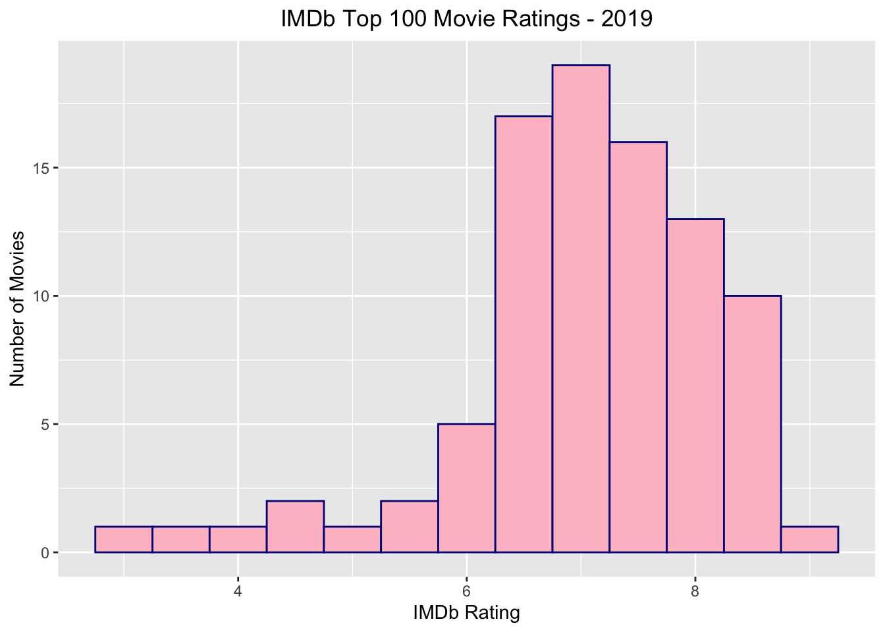

Data scientists often face the challenge of building their own dataset by obtaining relevant information from the web for their models. Web scraping is one of the most robust and reliable ways of getting web data without significant manual effort. In this blog post we will be scraping the data for top 100 movies in 2019 from IMDb using the rvest package (authored by Dr.Hadley Wickham). The first step is the install the essential packages: tidyverse (for data wrangling) and rvest (for web scraping).
library(tidyverse)
#Loading the rvest package
library(rvest)
library(kableExtra)Next, we will store the URL for the top 100 movies of the year 2019 in the imdb_url variable and pass this as an argument in the read_html function from the rvest package. This converts the webpage into an html document and stores it in the imdb_page variable. The html document contains text information with tags to define the organization and references to the CSS file for styling attributes.
imdb_url <- "https://www.imdb.com/chart/moviemeter?ref_=nv_mv_mpm" #URL for IMDb top 100 movies for 2019
imdb_page <- read_html(imdb_url) #Creates an html document from URLAfter we have the html document stored, we can pass it into the html_table function from the rvest package which reads the html file, recognizes all the tables, and organizes the tabulated data into R dataframes. All the tables on the IMDB page are being stored in a list named table_list. Note that the ‘fill’ parameter is set to TRUE, so that all the missing information is stored as NA.
table_list <- html_table(imdb_page, fill = TRUE) #Parses tables into dataframes
length(table_list) #checking the number of data frames stored in the list## [1] 1The table_list variable contains two data frames, the first one contains the top 100 movies data and the second one contains miscellaneous information from the webpage. Since we are only interested in the first dataframe, we would need to extract it from the list and store it separately to analyze it further.
top_100 <- table_list[[1]] #Storing movies table in data frame
names(top_100) #Checking column names## [1] "" "Rank & Title" "IMDb Rating" "Your Rating"
## [5] ""After looking at the column names, we can see that the first and the last columns have no names. Thus, we need to first rename the columns to replace the empty column names and remove spaces in the column names.
colnames(top_100) <- c("Empty", "Title","IMDb_Rating","User_Rating","Empty2") #Renaming columns
knitr::kable(head(top_100,3), format = "html") %>% kable_styling() #Looking at the movies column| Empty | Title | IMDb_Rating | User_Rating | Empty2 |
|---|---|---|---|---|
| NA | The Irishman (2019) 1 (no change) | 8.2 |
12345678910 | NA |
| NA |
Marriage Story (2019) 2 ( |
8.2 |
12345678910 | NA |
| NA |
Wonder Woman 1984 (2020) 3 ( |
NA |
12345678910 | NA |
A quick look at the Rank & Title column shows that the data contains multiple pieces of information separated by “\n”. We will now use dplyr functionalities to split the multiple pieces of information from the Rank & Title column and store the resulting list as a separate column named Title_list. Since we are only interested in the first element of Title_List, we will loop through all the column values and store the first element of each record in a vector named movie_names. We will finally join the movie_names list and the IMDb_Rating column from the movie table to form a clean version of the data.
top_100_updated<- top_100 %>%
select("Title", "IMDb_Rating") %>%
mutate(Title_list = strsplit(Title,"\\n")) #Creating a new column which contains a list of values from 'Title' column
movie_names = vector()
for (i in 1:100){
movie_names[i] = top_100_updated$Title_list[[i]][1] #Extracting movie names from the list
}
top_100_clean <- cbind(top_100_updated,movie_names) %>% #Joining the cleaned columns
select(Title = movie_names, IMDb_Rating)
knitr::kable(head(top_100_clean,3), format = "html") | Title | IMDb_Rating |
|---|---|
| The Irishman | 8.2 |
| Marriage Story | 8.2 |
| Wonder Woman 1984 | NA |
The resulting clean data can be used to do further analysis by plotting a histogram of movie ratings using the ggplot2 library.
ggplot(top_100_clean, aes(IMDb_Rating)) + # Reading rating information from the data frame
geom_histogram(na.rm = TRUE, binwidth = 0.5, color = "DarkBlue", fill = "Pink") +
labs(x = "IMDb Rating", y = "Number of Movies", title = "IMDb Top 100 Movie Ratings - 2019") +
theme(plot.title = element_text(hjust = 0.5)) 
We were able to use web scraping techniques to extract data from a webpage, clean the data and perform analysis on it. From the above plot, we can draw the conclusion that the IMDb ratings show a left skewed uni modal distribution where the ratings are mostly centered around 7.